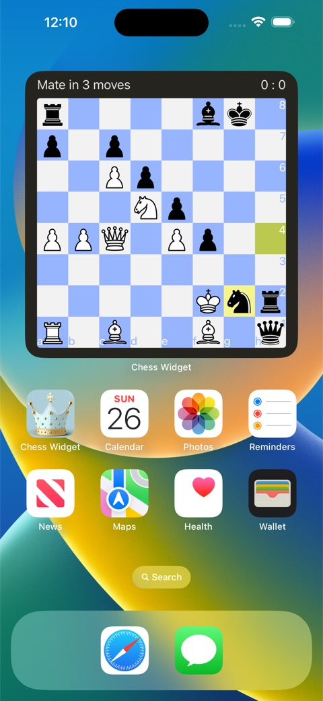
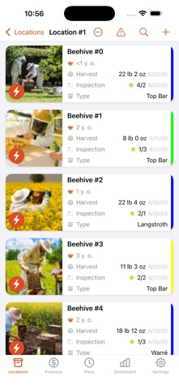

INDEPENDENT APPS · iPHONE, iPAD & MAC
A place for your
next move.
Chess for your everyday breaks.
A logbook for your days in the bee yard.
Chess Widget
A little chess, every day.
Daily puzzles on your Home Screen or Mac desktop, online play with Lichess, computer practice, Coach game reviews and a board for your own ideas.
Free to download · Optional Pro subscription
Explore Chess WidgetView on the App Store
Your apiary, always at hand.
Keep hive inspections, feedings, treatments and harvests together. Plan your next visit and work offline, with optional iCloud sync.
Free to start · Optional Pro subscription
Explore ApiaristView on the App Store
Both apps also run on Mac with Apple Silicon (M1 or later), with macOS 12 or later. Some features require a newer OS.